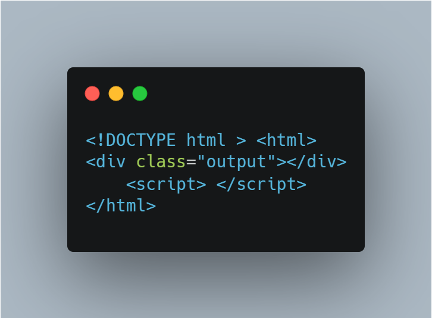

Wybierz element strony internetowej i uaktualnij jego treść, zmień styl i dodaj atrybuty. Utwórz plik HTML zawierający element strony internetowej z klasę output. Jako punkt wyjścia skorzystaj z przedstawionego tutaj szablonu kodu HTML. 
W elemencie <script> wprowadź opisane tutaj zmiany dla
elementu klasy output.
classList.add(), dodaj do elementu
klasę red.
document.URL() i uaktualnij tekst wyświetlany przez element
w taki sposób, aby zawierał ten adres URL. Możesz najpierw zalogować się
do konsoli i upewnić się, że korzystasz z poprawnej wartości.